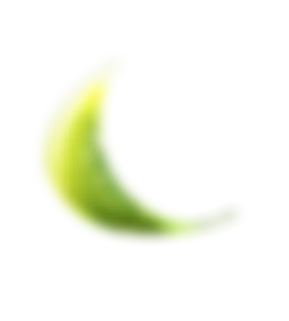
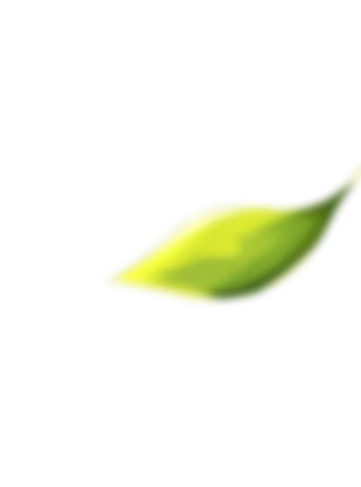
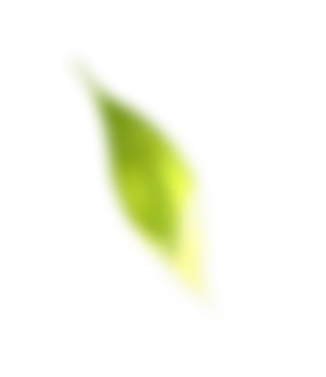
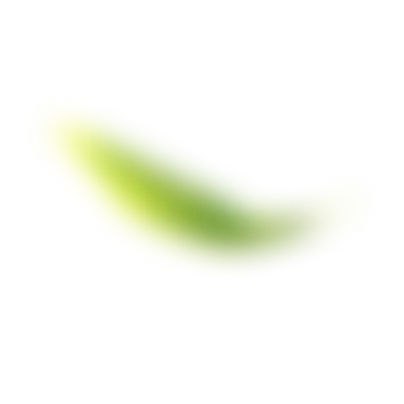
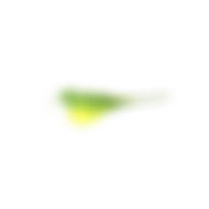
Nuestro Manifiesto
En una Tierra llena de Vida la salud es un estado natural y la belleza su consecuencia.
En una Tierra llena de Vida somos uno; nuestro cuerpo, nuestra consciencia y nuestro planeta.
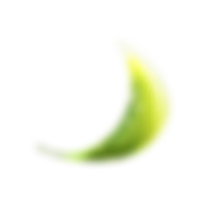
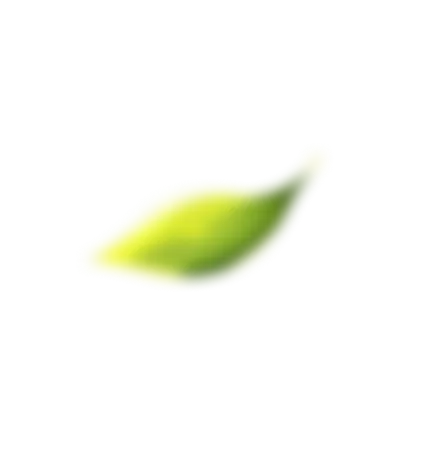
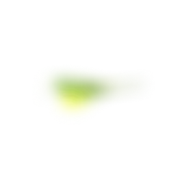
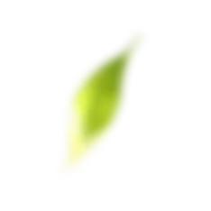
En una tierra llena de vida
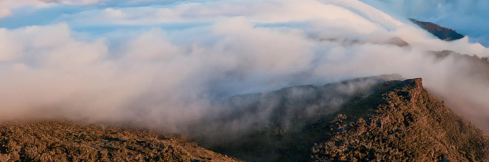
En una Tierra llena de Vida respiramos en armonía con nuestra naturaleza. Nos alimentamos de su pureza, nos nutrimos de su verdad.
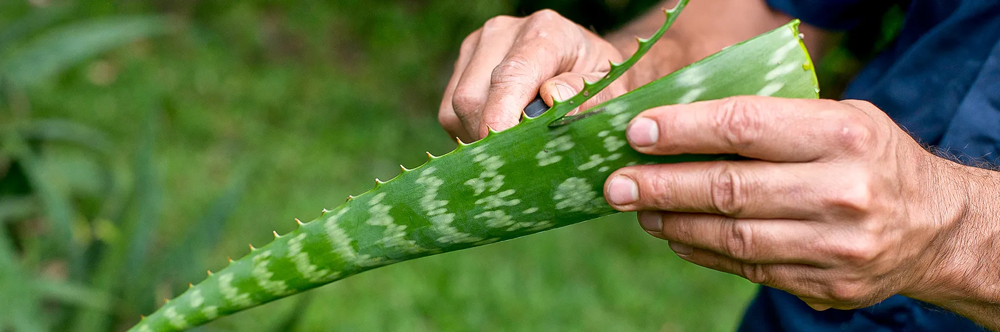
En una Tierra llena de Vida nada sabe artificial. Porque lo que ves es lo que es. Las frutas y las hierbas son nuestros ingredientes activos, no una fórmula.
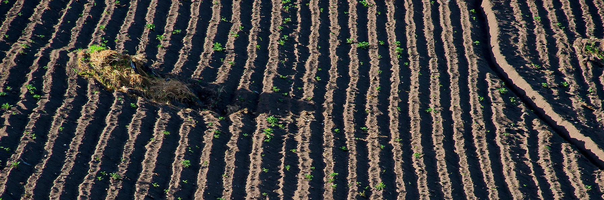
No hay que decir "sin" tantas veces para darnos tranquilidad.
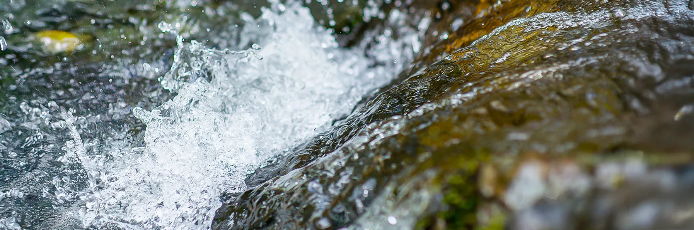
En una Tierra llena de Vida los productos son cristalinos. Abonamos nuestra piel con nutrientes vivos y sabiduría ancestral.
Aquí el "brillo natural" no es una metáfora, ni la lozanía una ilusión pasajera.
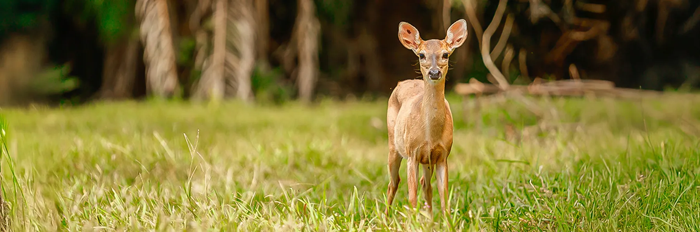
En una Tierra llena de Vida, los animales tienen el derecho a ser libres y amados. En una Tierra llena de Vida no hay que persuadir para reciclar, ni dar medallas para no contaminar.
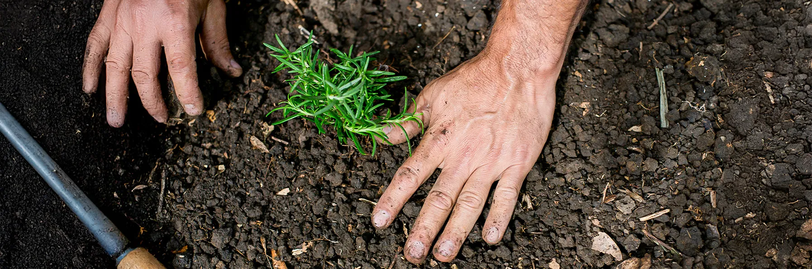
En una Tierra llena de Vida la salud es un estado natural y la belleza su consecuencia. En una Tierra llena de Vida somos uno; nuestro cuerpo nuestra consciencia y nuestro planeta.